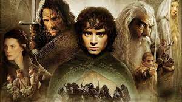
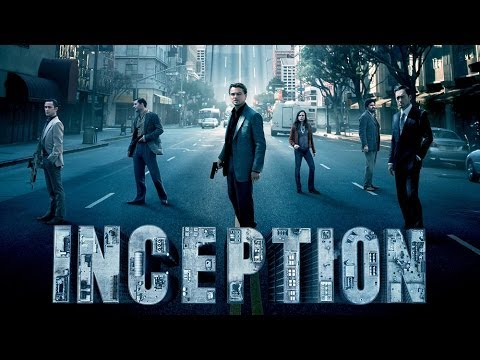

My favourite Movies
1. Lord of the rings
- Lord of The Rings is by far the best trilogy realized in history of movies not just because of his
time line story also because of the realistic graphics they used at that time.

- The Lord of the Rings is an epic high fantasy novel written by J.R.R. Tolkien, which was later fitted
as a
trilogy.
- Written in stages between 1937 and 1949, with much of it being written during World War II, it was
originally published in three volumes in 1954 and 1955. It has since been reprinted numerous times and
translated into at least 38 different languages, becoming one of the most popular works in twentieth-century
literature.
- The story concerns peoples such as Hobbits, Elves, Men, Dwarves, Wizards, and Orcs , and centers on the Ring
of Power made by the Dark Lord Sauron. Starting from quiet beginnings in the Shire, the story ranges across
Middle-earth and follows the courses of the War of the Ring. The main story is followed by six appendices
that provide a wealth of historical and linguistic background material, as well as an index listing every
character, place, song, and sword.
2. Inception
- Inception is the second one of my favourite movies especially I am drawn into the SF movies more that
the other genres.

- Inception is a 2010 science fiction action film written and directed by Christopher Nolan, who also
produced the film with Emma Thomas, his wife. The film stars Leonardo DiCaprio as a professional thief who
steals information by infiltrating the subconscious of his targets. He is offered a chance to have his
criminal history erased as payment for the implantation of another person's idea into a target's
subconscious. The ensemble cast includes Ken Watanabe, Joseph Gordon-Levitt, Marion Cotillard, Elliot
Page,Tom Hardy, Dileep Rao, Cillian Murphy, Tom Berenger, and Michael Caine.
Copyright © MyWebsite